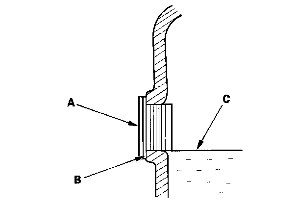
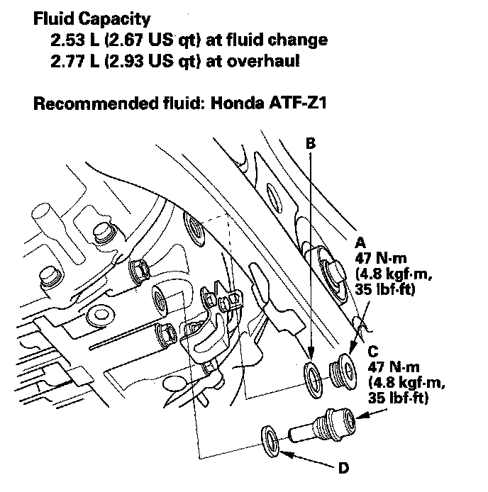

Rear Differential Fluid Inspection and Replacement
Rear Differential Fluid Inspection and Replacement
Inspection
1. Park the vehicle on level ground, and turn the ignition switch to LOCK (0).
2. Use solvent and a brush to wash any oil and dirt off the differential fluid inspection oil filter plugs.
3. Remove the filler plug (A) and the sealing washer (B) then check the condition of the fluid, and make sure the fluid is at the proper level (C).

4. The fluid level must reach up the bottom of the filler plug hole. If it is below the hole, add the recommended fluid until it runs out, then reinstall the filler plug with a new sealing washer.
Replacement
1. Park the vehicle on level ground, and turn the ignition switch to LOCK (0).
2. Remove the filler plug (A) and the sealing washer (B).

3. Remove the drain plug (C) and the sealing washer (D) and drain the fluid.
4. Reinstall the drain plug with a new sealing washer (D).
5. Add fluid until it reaches the bottom of the filler plug hole.
Fluid type Acura All-Wheel Drive Fluid (DPSF)
Note:
*Acura All-Wheel Drive Fluid (DPSF) replaces ATF-Z1 and is the factory fill for all SH-AWD models, however if you need to top off the differential and "DPSF" isn't available ATF-Z1 may be used.
*Per Acura Service News article: Oct 2010
6. Reinstall the filler plug with a new sealing washer.